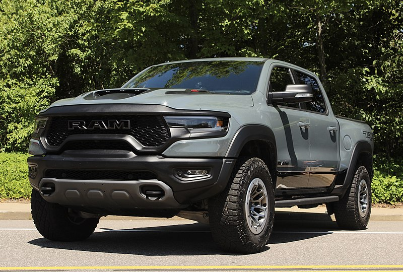

A luxuriously equipped pickup truck capable of triple-digit off-road speeds might seem like a rich person's fantasy, but the Ram TRX makes that fantasy come true. With 702 horsepower from a supercharged V8 engine and a trick off-road suspension, the TRX just begs for open land and an empty horizon. The price of entry is certainly steep, but if you value continent-crossing capability, without using asphalt, the TRX is your ticket.
$98,000